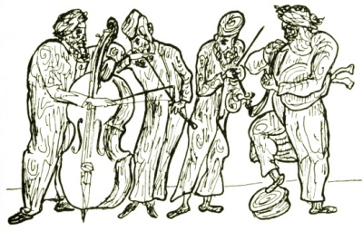

Sacred Texts
Judaism
|

|
The Golden Mountain
by Meyer Levin
[1932]
|
Contents
Start Reading
Page Index
Text [Zipped]
This is a collection of tales of the Eastern European Hassidic Jews,
centering on the holy men Baal Shem Tov and Rabbi Nachman of Bratzlaw.
The territory and narrative elements belong to the familiar world of
folk tales.
However, these magical realist stories of the Hassidic rabbis
are encoded with deeper levels of meaning similar to Buddhist, Sufi, Celtic,
and other spiritual traditions.
Lovingly recounted by master story-teller Meyer Levin,
this glimpse of a now long-gone world is a wonderful
anthology which can be enjoyed by all.
Title Page
Contents
Illustrations
Foreword
Baal Shem Tov
Before He Was Born
Israel and the Enemy
The Book of Mysteries
The Secret Marriage
The Bride in her Grave
Rabbi Israel and the Sorcerer
Two Souls
The Standing Sheep
The Mad Dancers
Rabbi Israel and the Horse
The Burning Tree
The Water-Spirit
The Rich Man
The Trial of Rabbi Gershon
Rabbi Israel's Daughter
Prayer
Thrice He Laughed
The Burning of the Torah
The Boy's Song
The Wandering in Heaven
The Prophecy of the New Year
The False Messiah
The Holy Land
His Torah
After the Death
The Book of Mysteries
Rabbi Nachman of Bratzlaw
The Dynasty
The Lost Princess
The Broken Betrothal
The Cripple
The Bull and the Ram
The Prince
The Spider and the Fly
The Rabbi's Son
The Sage and the Simpleton
The King's Son and the Servant's Son
The Wind that Overturned the World
The Seven Beggars